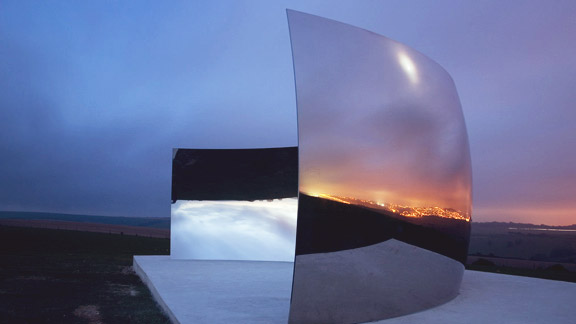

작품소개
PARADISE
WALK
두 개의 공간 사이를 잇는 감각의 브릿지
파라다이스 워크는 파라다이스시티의 두 공간 사이를 잇는 통로에 설치된 일종의 감각의 브릿지로, 지나가는 불과 1분 남짓한 짧은 시간 동안 시각과 청각이 모두 자극되는 색다른 경험을 제공합니다. 아치형 천장과 벽면을 따라 설치된 기둥들 사이로 뿜어져 나오는 조명과 음악은 이 공간을 통과하는 관객들에게 다른 차원 속 시간에 있는 듯한 느낌을 주며 감성의 전환을 가능케 하는 특별한 시간을 선사합니다. 또한, 시즌 별로 펼쳐지는 대형 영상 상영과 천장 공간을 활용한 설치 작품들은 새로운 실험 예술의 플랫폼으로서의 기능을 수행합니다.



작가소개
원더미디움
Wonder [wʌndə(r)] : 놀라운
Medium [mi:diəm] : 매개체, 재료
원더미디움은 영상, 설치 작업을 기반으로 활동하는 시각예술가를 중심으로 음악, 공연, 디자인 등 다양한 분야의 크리에이터들이 탄력적으로 참여하는 창작 실험집단입니다. 원더미디움은 시각예술의 범주에서 쓰이는 다양한 방식과 기법을 중심으로 개성 있는 재료들을 활용한 연출들을 실제의 현장으로 끌어들이는 매개체 역할을 하고자 합니다. 창의적 매개 실험집단을 자처하는 원더미디움을 통해 반복되는 익숙함에서 벗어나 뜻밖의 일상을 경험 할 수 있기를 기대합니다.